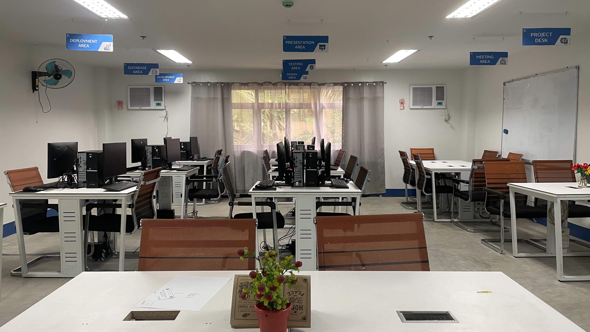
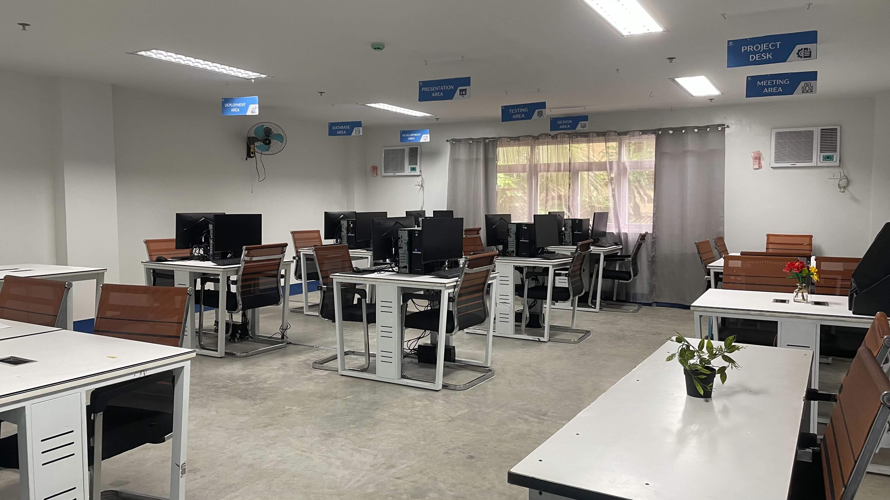
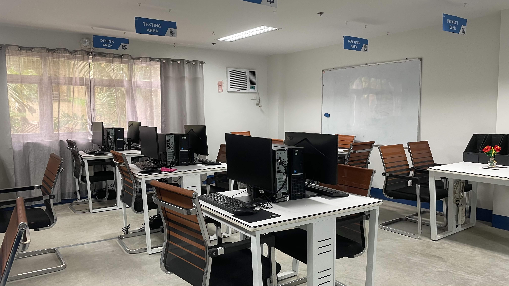
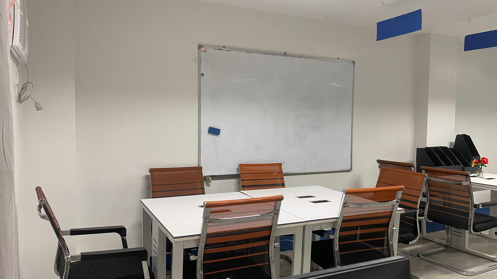
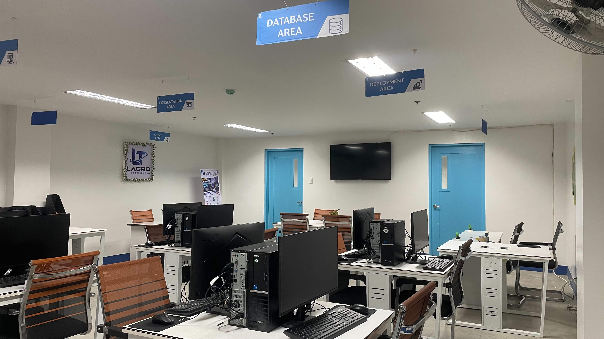
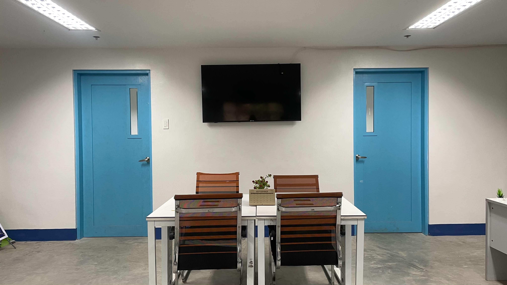

Active projects
A few of the projects currently moving through the center:
Project L.U.M.E.N.
A localized utility tracking and emergency reporting app that turns crowdsourced outage reports into instant alerts for facility personnel.
Classify
A centralized web app for class records, activities, and grades that helps teachers spot students who need attention.
SmartEnroll
A web and desktop enrollment system letting students register and submit documents online for admins to verify.
Company overview
Lagro Tech Hub is a student-managed IT solutions center operating under the leadership of Sir Zabala. Student teams take on all kinds of client-requested projects, built in Java, and have been doing so since 2025.
Photo gallery
A look at the space and the team in action.





